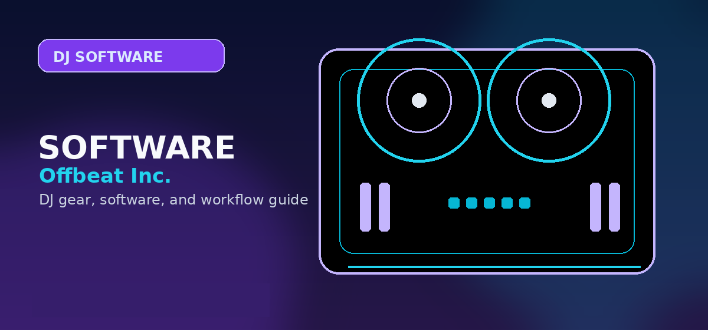

Best Free DJ Software 2026: Mixxx vs Virtual DJ vs Traktor vs djay for Beginners
Best free DJ software in 2026: Mixxx, Virtual DJ, Traktor, djay compared for beginners. Honest feature and performance comparison.

Disclosure: This page uses affiliate links. We may earn a commission at no extra cost to you. Full disclosure →
Breaking into the world of DJing in 2026 no longer requires a massive upfront investment in hardware and expensive licenses. For beginners, the software choice is the most critical decision; it is the bridge between your music library and the dancefloor. While many professional suites offer "free" versions, the definition of "free" varies wildly—from truly open-source platforms to "freemium" models that lock essential controller support behind a paywall. Whether you are looking to master seamless transitions, experiment with AI-driven stem separation, or simply play a set for friends, choosing the right tool depends on your hardware and your long-term goals. This guide compares the top four free-to-start DJ software options to help you launch your journey without spending a dime.
Mixxx: The Truly Free Open-Source Powerhouse
Mixxx stands alone as the only option on this list that is completely free and open-source. Unlike its competitors, there are no "Pro" upgrades or subscription tiers; every feature is available from the moment you install it. For beginners, Mixxx is an incredible learning tool because it provides a professional layout with dual decks, a mixer, and comprehensive library management without financial pressure. While the user interface feels slightly more utilitarian and dated compared to modern AI-driven apps, its stability and wide hardware compatibility make it a reliable choice. It is ideal for those who want to learn the fundamentals of beatmatching and phrasing without the temptation of "automation" shortcuts found in paid software.
Virtual DJ: The Feature-Packed Industry Giant
Virtual DJ is perhaps the most versatile software available in 2026, renowned for its industry-leading STEMS technology that allows you to isolate vocals and drums in real-time. The "Free" version is incredibly generous but comes with a major caveat: it is free for home use only and does not support DJ controllers. If you are starting with just a laptop and a mouse, Virtual DJ offers a professional-grade experience. However, the moment you plug in a physical mixer or controller, you'll need to upgrade to a Pro license (typically around $299). For those who prioritize cutting-edge features and a massive array of supported file formats, Virtual DJ is the gold standard for home practice.
Traktor: Precision Engineering for Electronic Music
Traktor, developed by Native Instruments, is the go-to for DJs focusing on techno, house, and electronic music. The entry-level versions of Traktor provide a rock-solid foundation, emphasizing precision looping and a highly stable environment. Traktor’s philosophy centers on "performance DJing," where the software acts as an instrument itself. For beginners, the learning curve is steeper than Virtual DJ or djay, but the reward is a deeper understanding of sync and phrase matching. While the full Pro version can be expensive (ranging from $99 to $499 depending on bundles), the basic tiers allow newcomers to organize their libraries and experiment with effects before committing to the full ecosystem.
Algoriddim djay: The AI-Driven Modern Choice
djay by Algoriddim is the most aesthetically polished option, designed specifically for the modern era of cross-platform DJing. It excels in the Apple ecosystem, offering a seamless experience between iPad, Mac, and iPhone. In 2026, djay is a leader in AI integration, offering "Neural Mix" capabilities that make remixing on the fly intuitive for absolute beginners. The freemium model allows you to explore the interface and basic mixing, but advanced AI features and cloud library integration typically require a subscription (approximately $49/year). For the beginner who values mobility, a sleek UI, and AI assistance to help bridge the gap in their technical skills, djay is the most accessible entry point.
2026 Free DJ Software Comparison
| Software | Price (Entry) | Best For | Key Pro | Key Con |
|---|---|---|---|---|
| Mixxx | $0 (Forever) | Pure Beginners | Completely Free | Dated Interface |
| Virtual DJ | $0 (No Controller) | Home Practice | Best STEMS Tech | Controller Paywall |
| Traktor | $0 - $99 | Electronic/Techno | Extreme Stability | Steeper Learning Curve |
| djay | Freemium / Sub | Mobile/AI Users | Best UI/UX | Subscription Model |
Quick Verdict
- Best for Zero Budget: Choose Mixxx. It is the only software that won't ask for a credit card as you grow.
- Best for AI & Ease of Use: Choose djay. The AI-assisted mixing makes you sound professional faster.
- Best for Technical Mastery: Choose Traktor. It forces you to learn the craft of DJing properly.
- Best for Feature Set: Choose Virtual DJ. Unbeatable functionality if you are operating via laptop.
As you move beyond the "free" stage, your software will eventually demand better hardware to truly shine. Whether you need a professional-grade controller to unlock Virtual DJ or a high-end mixer for Traktor, investing in quality gear is the final step in your evolution. Check out the latest deals on industry-standard equipment at DJ Tech Direct or enhance your performance with specialized tools from DJ-Extensions to take your sound from the bedroom to the club.
Bottom line: Mixxx is the best free DJ software in 2026 -- open source, actively maintained, supports DVS timecode, and runs on every OS. Rekordbox Performance Mode is also free with compatible Pioneer hardware. Search Pioneer DDJ-200 controller on Amazon →
Frequently Asked Questions
Is there any completely free DJ software?
Yes. Mixxx is completely free and open-source, supporting vinyl control (timecode), effects, and most hardware. VirtualDJ Home is also free for non-commercial use.
Is the free version of Rekordbox good enough?
Rekordbox Free is great for track preparation (analyzing BPM, setting cues, building playlists). For live mixing on Pioneer CDJs, it's all you need since the controller plays back your prepared library.
Does Serato DJ Lite cost money?
No. Serato DJ Lite is completely free. It activates when you plug in a supported Serato controller. You only need to pay for the Pro version if you want advanced features.
What free DJ software do professionals use?
Many professionals started with free software. Mixxx is respected for its DVS support. VirtualDJ free home version has been used for practice by countless DJs who later upgraded to licensed versions.
Can I make money DJing with free software?
Yes, technically. Serato DJ Lite is free for commercial use. However, professional gigs typically expect Serato DJ Pro or Rekordbox Performance. Free software is best for practice and bedroom DJing.